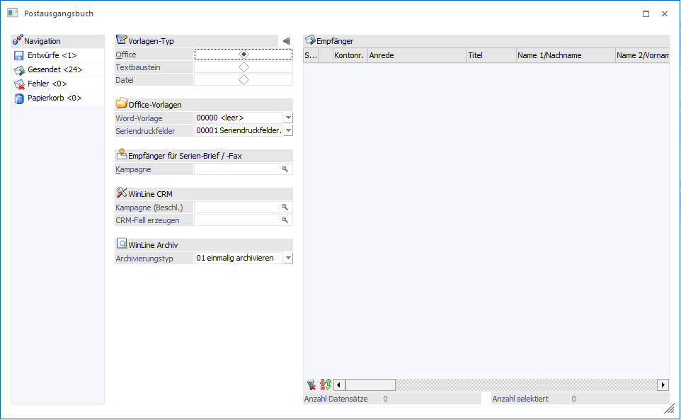
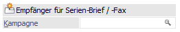
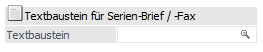
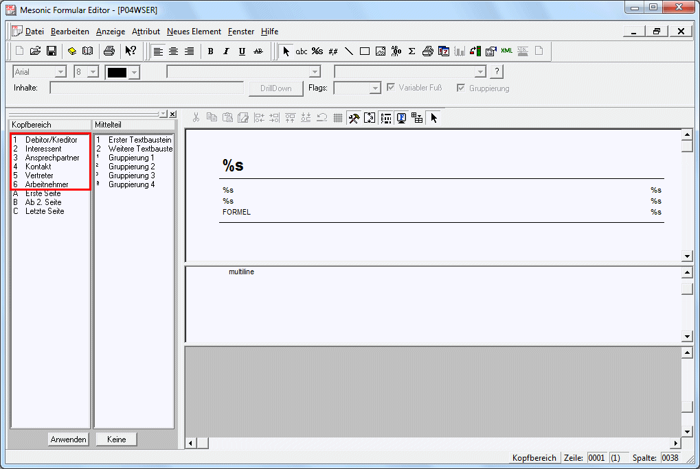

Im Ribbon kann der Button "Serien-Brief" ausgewählt werden, wodurch ein solcher Brief in der WinLine erzeugt wird.

Es kann aus den folgenden Nachrichten-Typen gewählt werden:
ü Office
Mit dem Vorlagentyp
"Office" kann ein Dokument an Office zur detaillierteren Bearbeitung übergeben
werden und von dort ausgedruckt werden. Seriendruckfelder, welche in der WinLine
eingepflegt wurden, können in Microsoft Word in das Schreiben integriert
werden.
ü Textbaustein
Mit dem Typ
"Textbaustein" können bestehende Textbausteine (die in der WinLine START erfasst
werden) geladen werden.
In die Texte können somit auch Variablen
eingebaut werden (die dann beim Versenden durch die Echtdaten ersetzt werden).
Diese Variante ist bei Serien-Mails sinnvoll. Variablen können durch Anklicken
des Buttons "Variable" in den Text übernommen werden.
ü Datei
Mit dem Vorlagen-Typen
"Datei" können bestehende *.txt oder *.htm/*.html-Dateien geladen werden.
Office-Vorlagen

Ø Word-Vorlage / Seriendruckfelder
Hier können für Word-Vorlagen oder Seriendruckfelder erstellte Office-Vorlagen selektiert werden.
Das Erstellen der entsprechenden Vorlagen erfolgt entweder direkt über Microsoft-Office oder über den Ribbon-Button "Vorlagen (Office / HTML)". Dieser Button öffnet das zugehörige Fenster "Postausgangsbuch-Vorlagen".

Es stehen drei Auswerte-Arten zur Verfügung:
ü HTML Vorlagen (für den Vorlage-Typen "Office" nicht relevant; wird eine Vorlage für diese Auswertung selektiert, wechselt der Vorlagen-Typ im Postausgangsbuch auf "Datei")
ü Word-Vorlagen
ü Word-Seriendruckfelder
Jede der drei Auswertungen bietet im Bereich "Vorlagen" bereits angelegte Ergebnisse an. Mit der Checkbox "Standard" kann die entsprechende Vorlage für das Postausgangsbuch vorbelegt werden.

Für "Word" stehen weiterhin entsprechende Tabellen- bzw. Ribbon-Buttons zur Verfügung.

ü Vorlage erzeugen (für
Word-Seriendruckfelder)
Im Fenster "Postausgangsbuch-Vorlagen" kann eine neue
Vorlage mit den Seriendruckfeldern erstellt werden, welche an Microsoft Word
übergeben werden sollen.
ü Vorlage öffnen
Öffnet eine
bereits vorhandene Vorlage, sodass diese bearbeitet und gespeichert werden
kann.
ü Vorlage löschen
Ermöglicht das
Löschen einer vorhandenen Vorlage.
ü Vorlage importieren
Ermöglicht
den Import einer vorhandenen *.csv-Datei (bei Seriendruckfeldern) bzw. *.dotx-,
*.docx-, *.dot-, oder *.doc-Dateien (bei Word-Vorlagen).
ü Vorlage exportieren
Über ein
Datei-Fenster kann der Ort für das Speichern im *.dotx- bzw. *.csv-Format
gewählt werden.
Empfänger für Serien-Brief/-Fax

Ø Kampagne
Es kann im Feld "Kampagne" ausgewählt werden, an wen der Serien-Brief/ das Fax geschickt werden soll.
WinLine CRM

Ø Kampagne (Beschl.)
Es kann eine gewünschte Kampagne zur jeweiligen E-Mail hinterlegt werden. Wenn eine E-Mail an eine Kampagne versendet wird und das Adressfeld mit der Eingabetaste der Tastatur bestätigt wird, dann wird das Feld "Kampagne (Beschl.)" mit diesem Eingabewert vorbelegt.
Ø CRM-Fall erzeugen
Aus dem Workflow-Matchcode kann ein Workflow-Startpunkt bzw. eine Aktion selektiert werden, um diese(n) beim Versand ausführen zu lassen.
WinLine Archiv

Ø Archivierungstyp
Über die Auswahl des Archivierungstypen können folgend aufgeführte Optionen definiert werden:
ü 00 - immer archivieren
Mit der
Option "immer archivieren" wird ein Archiveintrag mit der E-Mail erzeugt und pro
Empfänger mit deren Daten beschlagwortet.
ü 01 - einmalig archivieren
Mit
der Option "einmalig archivieren" wird die E-Mail (wenn diese über/an eine
Kampagne versendet wird) mit dem Schlagwort (der sog. Beschlagwortung) der
Kampagne archiviert.
ü 02 - nicht archivieren
Mit der
Option "nicht archivieren" wird die E-Mail zwar archiviert, jedoch nicht
beschlagwortet.
Ø Textbaustein für Serien-Brief/ -Fax

Ø Textbaustein
Bei der Auswahl des Vorlagen-Typs "Textbaustein" kann an dieser Stelle ein entsprechender Baustein hinterlegt werden.
Datei

Ø Dateiname
Bei der Selektion des Vorlagen-Typs "Datei" können im Eingabefeld "Dateiname" durch Eingabe der Datei- bzw. Pfadangaben, oder über das Anklicken des Lupen-Symbols (aus der sich dann öffnenden Dateiauswahl) die Dateitypen *.htm, *.html bzw. *.txt selektiert werden.
Diese Option wird ebenso über die Selektion des Ribbon-Buttons "Vorlagen (Office / HTML)" im Fenster "Postausgangsbuch-Vorlagen" geboten, wenn aus dem Bereich "Auswertungen" Vorlagen gewählt werden.

Der Verweis auf die gewählte Vorlage (Dateiname und Pfadangabe) wird anschließend in das Feld "Dateiname" übernommen.
Formularbearbeitung eines Serienbriefes
Für die Funktion des Serienbriefes bzw. zum Ausdruck wird das Formular mit der Nummer "P04WSER" herangezogen. Nachdem ein Serienbrief verschiedene Typen von Konten enthalten kann (Personenkonten, Interessenten, Ansprechpartner, Kontakte, Vertreter und Arbeitnehmer) gibt es im erwähnten Formular die Möglichkeit, die auszufüllenden Variablen für die verschiedenen Typen (mit Hilfe verschiedener Flags) auch unterschiedlich zu hinterlegen/gestalten.
